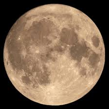
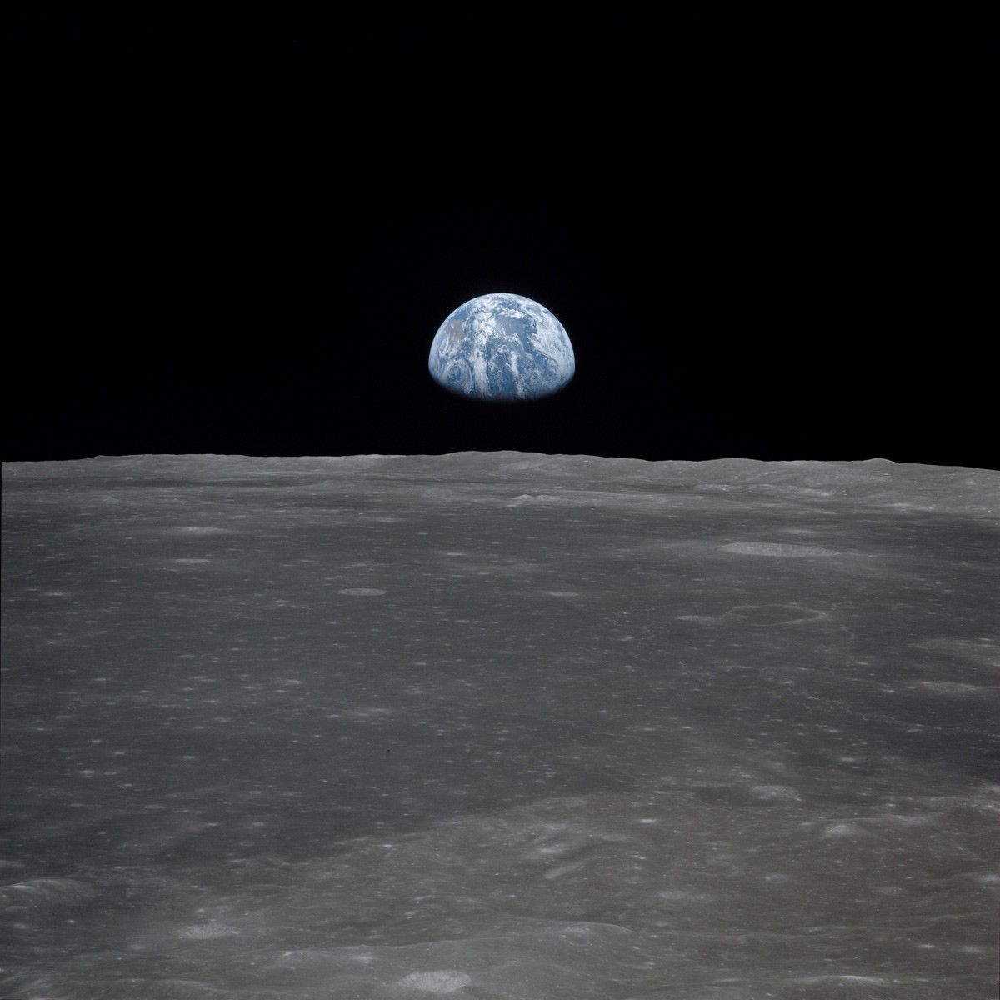
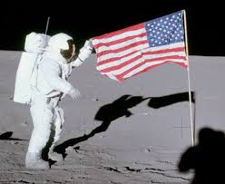
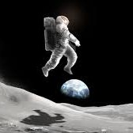
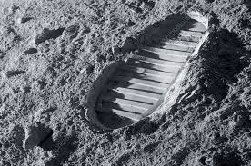

Why is the moon the best place in the universe to visit? Well just let me explain!

The moon has a wonderful veiw of the earth, and people who visit can take some very beautiful photos of our wonderful planet!!
Seeing the planet from so far away can remind you of how small you really are, and can also be a reminder of how large the universe really is.
More images of the earth from the moon
Doesn't everyone love America, the great country that we live in. Well, when going to the moon, you will be able to see one of America's greatest achivements, having the first person on the moon.
America was the first ever country to send a person to the moon. When they were there, they planted this flag to reprresent the feats America succeded in and what Americans were able to do. When visiting the moon, you can have your own look at the wonderous monnument and remember our countries achivements
Learn the story of the Apollo 11 here
Have you ever been able to jump over 12 feet in the air? Probably not, that height is only possible on some very bouncy trampolines. What if I told you you would definently be able to jump 12 feet and up on the moon?
The moon has a lower gravity than earth, around 1/6 less than our planet. This can make movement more difficult, but the challenge would be quite fun. Jump up and down on that planet to reach new herizons up in the air.
Gravity on other planets
Have you ever wished to prove that you once existed in the world. That your presence in the universe truly means something wonderful. That your existence can change the makeup of atoms in the universe.
Well, that is a very possible feat on the moon. The moon does not have erosion like on the typical earth, because there is no wind or water to natrually erode the moon. This means that any footprints or other traces of yourself you leave on the moon will become perement editions and will stay on the moon forever.
Learn more about the first ever footprint on the moonIn conclusion, you should go to the moon as soon as possible. Below is a link with all of the steps showing how someone goes to the moon.
How to go to the Moon